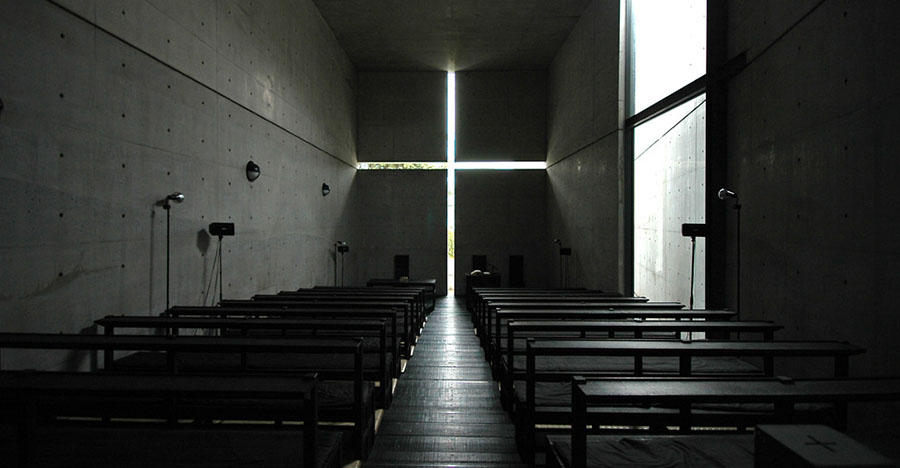

Описание
Тадао Андо — японский архитектор, лауреат Притцкеровской премии, последователь Алвара Аалто. Стиль Андо был охарактеризован как «критический регионализм». В 1969 году Андо основал архитектурную мастерскую «Tadao Ando Architects & Associates». В 1995 году он был награждён «Притцкеровской премией» за высокие индивидуальные достижения в области архитектуры. Его работы хорошо известны массированным использованием естественного света, а также использованием натуральных форм ландшафта в архитектуре.
Работы
Его сооружения часто характеризуются сложными трёхмерными путями циркуляции, которые переплетаются с внешним и внутренним пространством, образуя крупные фигуры. Особенно примечателен его проект здания «Дом Адзума», монолитный бетонный двухэтажный дом, завершённый в 1976 году.
Это одна из его ранних работ, где уже проявляется его будущий стиль. Дом состоит из трёх секций: две закрытые части здания разделены открытым двором. Тадао Андо пытается применять национальные эстетические ценности к архитектуре современных зданий. По его мнению, архитектор должен следовать естественному ландшафту, а не менять его. В интерьерах он мастерски использует возможности естественного и искусственного освещения
